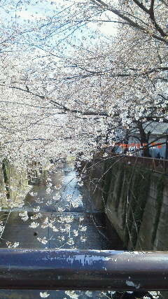

| 2012/04 08 Sun | ひめたん(* ゝω・*)ノ その125 |
はーいみなさん＼(^O^)／
昨日の正解を発表します☆
昨日の記事まだ読んでないーって人はまだこの下読んじゃだめよ?
正解は、
でろでろでろでろでーん!

この
みどり
の子!
ハーフアップピンクカーデ時代のひめたんです(*^^*)
正解した方おめでとう♪
昨日のぶろぐにたくさん寄せられた質問。
これ間違えたらひめきゅん失格('・ω・`)?
いえいえそんなことっ!
ただ、今度から乃木どこ?みる時にちょっとでも感動していただけたら
嬉しいなって思ったの。
と、面白い発見をして
自慢したかった(^ω^)

もうちょっと言うとね。
超完璧な答えの方もいらっしゃったのですが
昨日の画像参照。左下のオレンジの
みくもってぃ
(安藤美雲chan)をスタートして
時計回りであいうえお順になってるの(*^^*)
今日は入学式でした
出席番号が45番でした
あーん46が好きなのにー...
でもクラスが楽しすぎてやばいです(o>ω<o)!
超ふれんどりー。
お友だちできました。みんなでトイレでお話しました。
んーいい感じにやっていける気がする//
ということで握手会欠席して、ふぁみりーさん、メンバーのみんなには
ご迷惑をおかけしました←
今度みなさんに会える日を楽しみに頑張る!
ひめたん頑張るお♪

前の写真は目黒川でした☆
 毎日欠かさずやってることってなーに?
毎日欠かさずやってることってなーに?
お風呂の中でマッサージすること、お風呂あがってマッサージすること、
あとはブログ記事作成(`・ω・')どやどやあぁあ
結局朝アップしたりってこともたまにあるけど
何かしら夜の間に質問答えたり何やらかんやらしてんだよ☆
 今度の握手会からひめたんのこと、ひめかわって呼んでいい?
今度の握手会からひめたんのこと、ひめかわって呼んでいい?
 これからひめひめって呼ぶからOK?
これからひめひめって呼ぶからOK?
ひめたんって呼ぶの恥ずかしいかーしーらっ?
何でも好きによんでー＼(^O^)／
他に乃木メンでツンデレな人いますか??
ツンデレ=川後(//ω//)
名古屋の個握で、コスプレ恥ずかしがってたのー。
萌え萌えきゅんっ

ゲームしますか?
うーしない(>_<)
ちっちゃい頃はたまごっちとかやってたよ♪
たまごっち。たまごっちもゲームに入る...よね?
岡山県のことをわかる範囲でおしえて!!!!
桃太郎!きびだんご!
なくなっちゃったけどチボリ公園!
誰になら推し変してもいいですか?
えーそんなこと聞くの...?
ひめたんのニックネームって誰が考えたん?
初めてひめたんって呼んだのは妹(*^^*)
ひめたんは、ツンデレじゃないのかな?(笑)
でーれでれです。照。
つんつん要素は存在しないんだこれが。
特に思わず広島弁全開の時ってどんなシチュエーション?
今日の入学式のあとのHRで早速広島弁全開だったみたい。
もう方言を封印するのは無理だとわかりました('・ω・`)にゃ
ひめきゅんより上の位とかあるの?
今は存在しないけど...
作りましょうか(∀)☆
 ヒールかぁ〜疲れない?
ヒールかぁ〜疲れない?
男だからまったくわからんけど、ヒールってどんな感じ??
ヒール疲れますよ('・ω・`)
でもヒールを履いてこそ素敵なあいどる的なポリシーね。それだけで頑張れますお。
試しにお店で履いてみてはどうかしら☆?
無理かぁ
 わら
わら
わら
 遠征大変じゃない?
遠征大変じゃない?
荷物の準備と朝早い集合が辛いけど
出発してしまったらもう幸せ(*'∀`*)♪
修学旅行みたいな楽しさです//
 うぇっさい('▽`)ノこれから広めようと思ってんだけどどうかな?w
うぇっさい('▽`)ノこれから広めようと思ってんだけどどうかな?w
うぇっさい('▽`)ノひめたんもご協力しますよ♪
うぇっさい、うぇっさーい('▽`)ノ
 電車とかで寝ちゃって乗り過ごしたりすることってある?
電車とかで寝ちゃって乗り過ごしたりすることってある?
ありますよ('・ω・`)
寝過ごすのも大変だけど、寝ぼけて2っくらい早い駅で降りたことも
違う路線の電車に乗ったこともありますよ。
事故事故っ♪♪
ひめたん(*´・ω・*)
コメント(108)
2012/04/08 00:30